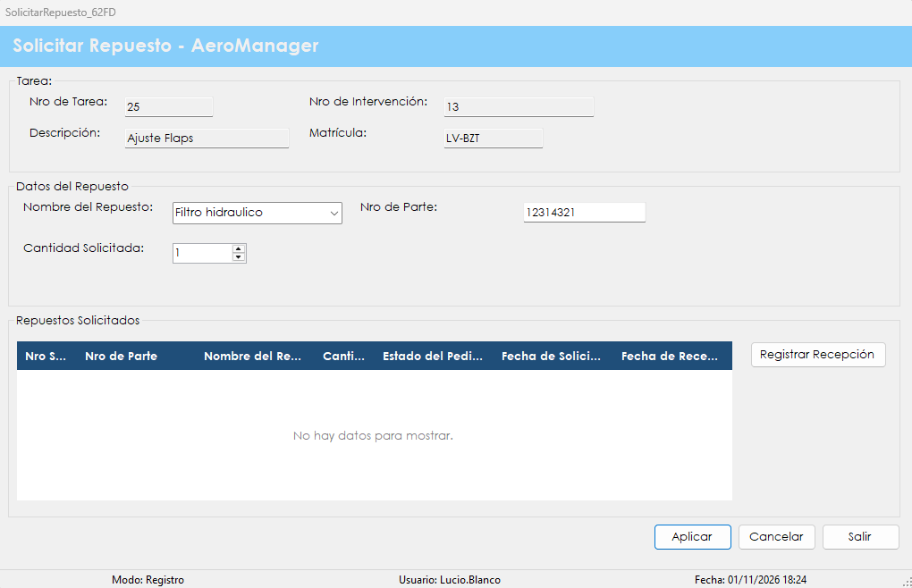

Registra los repuestos que necesita una tarea de mantenimiento y deja asentado cuándo llegó cada uno.
Durante una intervención puede hacer falta un material que no estaba previsto. Esta pantalla deja constancia del pedido, asociado a la tarea que lo necesita, y permite seguirlo hasta su llegada. Cada solicitud recibe un número y nace en estado Solicitado; al registrar la recepción pasa a Recibido.
El seguimiento tiene un efecto directo sobre el trabajo: una intervención no se puede cerrar mientras tenga repuestos sin recibir. Además, los repuestos utilizados figuran luego en la información que revisa el inspector al certificar.
No se abre desde el menú. En Registrar intervención, hay que seleccionar una tarea de la grilla y presionar el botón Solicitar Repuestos. Por eso requiere la misma patente que esa pantalla.

| Control | Para qué se usa |
|---|---|
| Tarea | Muestra Nro de Tarea, Descripción, Nro de Intervención y Matrícula. No se puede editar. |
| Nombre del Repuesto | Se elige de la lista de repuestos ya pedidos alguna vez o se escribe uno nuevo. |
| Nro de Parte | Identificador del repuesto. Se completa solo al elegirlo de la lista. |
| Cantidad Solicitada | Unidades que se necesitan. |
| Repuestos Solicitados | Grilla con Nro Solicitud, Nro de Parte, Nombre del Repuesto, Cantidad Solicitada, Estado del Pedido, Fecha de Solicitud y Fecha de Recepción de esta tarea. |
| Registrar Recepción | Marca como recibida la solicitud seleccionada en la grilla. |
| Aplicar | Registra la solicitud. También se activa con la tecla Enter. |
| Cancelar | Borra los datos del repuesto. No afecta las solicitudes ya registradas. |
| Salir | Vuelve a Registrar Intervención. También se activa con la tecla Esc. |
| Situación | Qué significa y qué hacer |
|---|---|
| "Debe completar el nombre del repuesto y el número de parte." | Falta alguno de los dos datos. |
| "La cantidad solicitada debe ser mayor que cero." | Hay que indicar al menos una unidad. |
| "El número de parte no corresponde al repuesto" seguido del nombre del repuesto, "del catálogo. Vuelva a seleccionarlo de la lista." | El nombre ya existe, pero con otro número de parte. Hay que elegirlo de la lista para que el número se complete solo. |
| "Solicitud de repuesto registrada correctamente. Nro de Solicitud:" seguido del número | El pedido quedó registrado con el número informado, en estado Solicitado. |
| "Error al registrar la solicitud de repuesto:" seguido del motivo | El pedido no se guardó. Después de los dos puntos se indica la causa técnica. |
| "Debe seleccionar una solicitud de la grilla." | Hay que hacer clic en una solicitud antes de presionar Registrar Recepción. |
| "La solicitud seleccionada ya se encuentra recibida." | Esa solicitud ya figura como recibida: no hay nada más que registrar. |
| "¿Registrar la recepción de la solicitud Nro" seguido del número, del nombre del repuesto y de la cantidad | Conviene verificar el material recibido antes de confirmar con Sí. La recepción se registra por el total de la solicitud. |
| "Recepción registrada correctamente." | La solicitud quedó en estado Recibido. |
| "Error al registrar la recepción:" seguido del motivo | La recepción no se guardó. Después de los dos puntos se indica la causa técnica. |
| "Error al recuperar los repuestos:" seguido del motivo | No se pudo cargar la lista o la grilla. Después de los dos puntos se indica la causa técnica. |
| "El registro fue modificado o ya no existe. Vuelva a buscarlo e intente nuevamente." | La grilla se actualiza. Hay que revisar la solicitud y volver a intentar. |
| "La operación se registró correctamente, pero no pudo asentarse en la Bitácora:" seguido del motivo | El pedido o la recepción se guardó, pero el evento no quedó en la bitácora. Después de los dos puntos se muestra el motivo técnico. Conviene avisarle al administrador. |